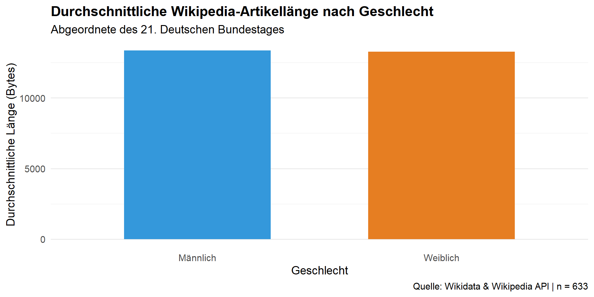
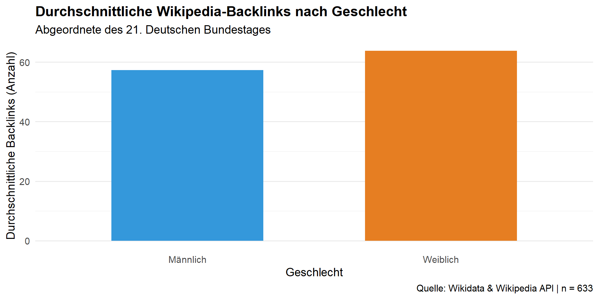

Sitzung 3b: Arbeiten mit Wikipedia API | Arbeit an Team-Projekten
Unterscheidet sich die Länge von Wikipedia-Artikeln deutscher Politikerinnen vs. Politiker?
Sample: Politikerinnen und Politiker des 21. Bundestages
Unterscheidet sich die Länge von Wikipedia-Artikeln deutscher Politikerinnen vs. Politiker?
Vorgehen:
Für die Analyse mit R nutzen wir zwei Hauptzugänge:
WikidataR.WikipediRWikidata speichert Informationen in Triplen (Subjekt - Prädikat - Objekt). Um diese abzufragen, nutzen wir SPARQL.
P39: öffentliches Amt oder StellungQ1939555: Mitglied des Deutschen BundestagesP2937: WahlperiodeQ124661964: 21. Deutscher Bundestagsparql_query = '
SELECT DISTINCT ?person ?personLabel ?gender ?genderLabel ?article WHERE {
?person p:P39 ?positionStatement .
?positionStatement ps:P39 wd:Q1939555 . # Mitglied des Deutschen Bundestages
?positionStatement pq:P2937 wd:Q124661964 . # 21. Deutscher Bundestag (Q-ID einsetzen)
?person wdt:P21 ?gender.
?article schema:about ?person;
schema:isPartOf <https://de.wikipedia.org/>.
SERVICE wikibase:label { bd:serviceParam wikibase:language "de,en". }
}
ORDER BY ?personLabel
'# A tibble: 634 × 5
person personLabel gender genderLabel article
<chr> <chr> <chr> <chr> <chr>
1 Q132733585 Q132733585 Q6581097 männlich Raimond_Scheirich
2 Q132733606 Aaron Valent Q6581097 männlich Aaron_Valent
3 Q132733543 Achim Köhler Q6581097 männlich Achim_K%C3%B6hler
4 Q132733484 Adam Balten Q6581097 männlich Adam_Balten
5 Q96096131 Adis Ahmetovic Q6581097 männlich Adis_Ahmetovic
6 Q27065428 Adrian Grasse Q6581097 männlich Adrian_Grasse
7 Q132733506 Agnes Conrad Q6581072 weiblich Agnes_Conrad
8 Q109309 Agnieszka Brugger Q6581072 weiblich Agnieszka_Brugger
9 Q122308264 Alaa Alhamwi Q6581097 männlich Alaa_Alhamwi
10 Q1738272 Albert Rupprecht Q6581097 männlich Albert_Rupprecht
# ℹ 624 more rows# Hilfsfunktion, um die Seitengröße zu extrahieren
get_wiki_size <- function(title) {
# Wir fragen die Info für die deutsche Wikipedia ab
info <- page_info("de", "wikipedia", page = title, clean_response = TRUE)
# Extrahiere die Länge in Bytes (standardmäßig im Feld 'length' enthalten)
if (!is.null(info[[1]]$length)) {
return(info[[1]]$length)
} else {
return(NA)
}
}
# Anwendung auf die Liste von Titeln
df <- df %>%
mutate(article_length = map_dbl(titles, get_wiki_size))get_backlinks <- function(title) {
backl <- page_backlinks("de", "wikipedia", page = title, limit = 500)
# Extract backlink count
if (!is.null(backl$query$backlinks)) {
return(length(backl$query$backlinks))
} else {
warning("No backlinks found or page does not exist.")
return(0)
}
}
# Anwendung auf die Liste von Titeln
df <- df %>%
mutate(article_backl = map_dbl(titles, get_backlinks))plot_data <- df %>%
filter(female %in% c(0, 1)) %>% # Nur männlich (0) und weiblich (1)
mutate(Geschlecht = ifelse(female == 1, "Weiblich", "Männlich")) %>%
group_by(Geschlecht) %>%
summarise(
avg_length = mean(article_length, na.rm = TRUE),
sd_length = sd(article_length, na.rm = TRUE),
avg_backl = mean(article_backl, na.rm = TRUE),
sd_backl = sd(article_backl, na.rm = TRUE),
n = n()
)
plot_data# A tibble: 2 × 6
Geschlecht avg_length sd_length avg_backl sd_backl n
<chr> <dbl> <dbl> <dbl> <dbl> <int>
1 Männlich 13363. 19130. 57.3 83.9 427
2 Weiblich 13274. 15295. 63.8 81.8 206df = df %>%
filter(female <2)
t_test_result <- t.test(article_length ~ female, data = df)
t_test_result
Welch Two Sample t-test
data: article_length by female
t = 0.06283, df = 495.4, p-value = 0.9499
alternative hypothesis: true difference in means between group 0 and group 1 is not equal to 0
95 percent confidence interval:
-2684.799 2862.183
sample estimates:
mean in group 0 mean in group 1
13363.12 13274.43 ggplot(plot_data, aes(x = Geschlecht, y = avg_length, fill = Geschlecht)) +
geom_bar(stat = "identity", width = 0.6, show.legend = FALSE) +
scale_fill_manual(values = c("Männlich" = "#3498db", "Weiblich" = "#e67e22")) +
# Beschriftungen
labs(
title = "Durchschnittliche Wikipedia-Artikellänge nach Geschlecht",
subtitle = "Abgeordnete des 21. Deutschen Bundestages",
x = "Geschlecht",
y = "Durchschnittliche Länge (Bytes)",
caption = paste("Quelle: Wikidata & Wikipedia API | n =", sum(plot_data$n))
) +
theme_minimal(base_size = 14) +
theme(
plot.title = element_text(face = "bold"),
panel.grid.major.x = element_blank()
)
df = df %>%
filter(female <2)
t_test_result2 <- t.test(article_backl ~ female, data = df)
t_test_result2
Welch Two Sample t-test
data: article_backl by female
t = -0.93028, df = 414.47, p-value = 0.3528
alternative hypothesis: true difference in means between group 0 and group 1 is not equal to 0
95 percent confidence interval:
-20.274367 7.248879
sample estimates:
mean in group 0 mean in group 1
57.28337 63.79612 ggplot(plot_data, aes(x = Geschlecht, y = avg_backl, fill = Geschlecht)) +
geom_bar(stat = "identity", width = 0.6, show.legend = FALSE) +
scale_fill_manual(values = c("Männlich" = "#3498db", "Weiblich" = "#e67e22")) +
# Beschriftungen
labs(
title = "Durchschnittliche Wikipedia-Backlinks nach Geschlecht",
subtitle = "Abgeordnete des 21. Deutschen Bundestages",
x = "Geschlecht",
y = "Durchschnittliche Backlinks (Anzahl)",
caption = paste("Quelle: Wikidata & Wikipedia API | n =", sum(plot_data$n))
) +
theme_minimal(base_size = 14) +
theme(
plot.title = element_text(face = "bold"),
panel.grid.major.x = element_blank()
)
männlich weiblich
427 206 